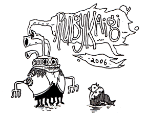

Day One of RubyKaigi2006 #

We are proud to report RubyKaigi20061 at Tokyo, which is the first conference dedicated to Ruby in Japan. Takahashi-san, the leader of Japan RubyNoKai, was impressed by Ruby Conference 2006 at San Jose Ruby Conference 2005 at San Diego last summer, and has been driving volunteers, sponsors and users to hold a conference for Ruby here in Japan as well. The tickets were sold out just an hour after the sale on line. About 150 attendees who had luck to get their tickets listened to the sessions today: key note, panel discussion on Ruby 2.0 and introductions of some Ruby libraries and applications.
Matz announced his plan on the new stable release, Ruby 1.9.1, which will be released at Christmas3 2007, with the Ruby 1.9.0 branch being developed. He will keep on maintaining Ruby 1.8.x as well. If he has to apply security patches, the forth version number (1.9.1.1, 1.9.1.x …) would be possible. Ruby 1.9.1 will include local variables, M17N and YARV inclusion2, not some functionalities that are supposed to feature in Ruby 2.0 such as the new GC, classbox, selected namespace, keyword arguments and method combination. This Ruby 1.9.1 might be numbered as Ruby 2.0, though.
It is possible to put Rubygems into the standard libraries in Ruby 1.9.1, said Matz, and he needs to talk more with the Rubygems guys.
Sasada-san, the author of YARV, said that YARV is about to be able to generate object files to obfuscate source codes. However, the priority is low because he has less interest. If a sponsor wants it, he can give him/her immediately. YARV lacks continuation. Continuation funs should speak louder.
A Perl guy gave a question, “Can Rubyists get popular with girls?”, because there are some Perl young stars in Japan. The answer is “Yes. Ask your girl friend, which do you like better pearl or ruby if I give you a present?”.
Tomorrow is the following day with the key note of David Heinemeier Hansson. Enjoy!
1 kaigi means meeting or conference
2 YARV only uses native threads. If you needs user threads (like on MS-DOS), you have to stay on Ruby 1.8
3 Not this year. Ruby 1.8.5 will be comming this August.
Update: Ohhhya, many more specific notes from Stoyan Zhekov on his Stikipad. Poor Zhesto sounds so tired. But classic: The DHH girl is here – Mary. Real lady. Respect. Yay, The DHH Girl!
Update #2: Photos are showing up on Flickr. Now there’s no doubt about it. We are outsiders.
Jomdom
Ohhh! Comments!
Gregory
Just a nitpick, this should probably read: Ruby Conference 2005 at San Diego.
Thanks for the update though, sounds exciting!
Julik
M17N … finally…. (drools all ovr his desk and faints in tears)
Pity for cintinuations because there are some brillian usages to the. Rals is still (and will most likely be) unable to span transactions across actions.
Julik
OTOH it means 2 more years of ridiculous, humiliating, disgusting, shameful mumbo-jumbos and hoops to get the gawddamn euro sign to appear before the gawddamn number and to have a russian expletive return 3 for it’s #length. Ugh.
flgr
What will classbox be? I’ve not heard about that feature before. Thank you!
Danno
No continuations?!
That’s not cool.
Guess I’m going to have to learn how to program an interpreter and add it myself… yeah, ETA on that’ll be 5 years.
>{{{ *>
Native threads? Aw man, now I won’t be able to spawn 1000 threads in my
blog comment spambaseball score downloader program.>{{{ *>
Anyone have a link for the “method combination” idea? Is it like function composition in Haskell?
acrylic
No no, I believe they mean christmas 2006. Or they are planning really far ahead.
Ezra
Can someone please clarify if Matz really said that the 1.9 release would be December 2006(aka this year)? Or is it really December 2007(over a year and a hlaf away)? Thanks
why
Well, two attendees have verified: next Christmas. 2007. There’s a pretty big list there.
But don’t look at 2.0 guys. It's these 1.9 releases that are the news. Do you remember running 1.7 for like two years? Even the windows installer was putting out 1.7 releases before 1.8 came out.
riffraff
method combination is the lispish thing where you can add advices before/after/around a function. Look here for an explanation. Otherwise, think of AOP and you are 90% right.
(I still think that we should steal generic functions/multimethods from common lisp too, but nobody seem to agree :( )
riffraff
forgot to say: thanks for the report daigo!
JEG2
Gregory: I believe diago meant this.
JEG2
Darn it, sorry about my typo daigo.
hgs
Julik: Waiting for important stuff is annoying. The usual, traditional, and unhelpful answer is “so write it yourself”. Can we come up with something better? I know very little about M17N and I18N , so can it be broken into small enoucgh steps for use as ruby quiz entries? What else might provoke creativity in this area?
pHiL
Any idea when YARV will get green threads and continuations?
Christmas too-thousand-and-seven as in too long to wait for Rubygems inclusion – why not include RubyGems in 1.8.5?
(Private telegram for Mr. _why the lucky stiff: hey, _why are you coming to FOSCON 2 : The Ruby Rodeo ? STOP )
Chuck
It’s eminently possible that I’m just being thick, but what are “these 1.9 releases” and how are they the news? It looks like Daigo’s entry (and the goodies named therein) is all about 1.9.1/2.0.